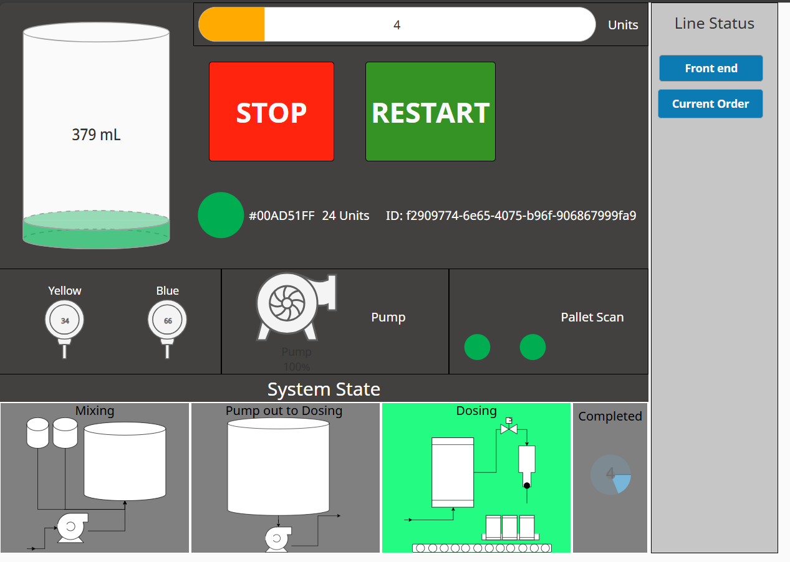
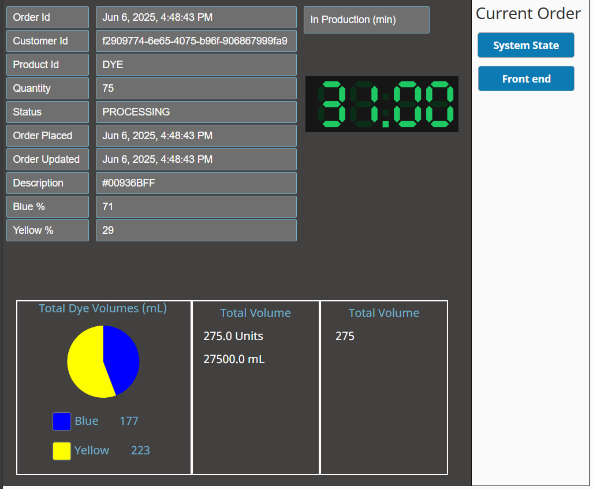

This project demonstrates integration between Siemens PLCs, Ignition SCADA, and Xero APIs to automate manufacturing KPIs and invoicing. Developed as part of my final-year BEngTech project at UNITEC Auckland.

Main process overview HMI showing real-time production metrics, equipment status indicators, and operator control interface for the automated manufacturing line.

Detailed analytics dashboard displaying KPI trends, production data integration with Xero API, and automated reporting functionality developed in Ignition SCADA.